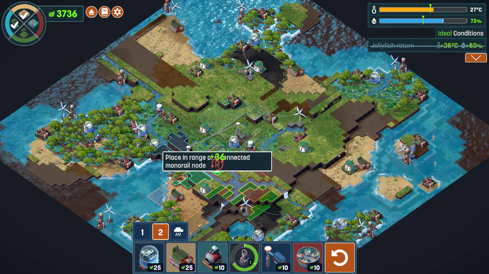
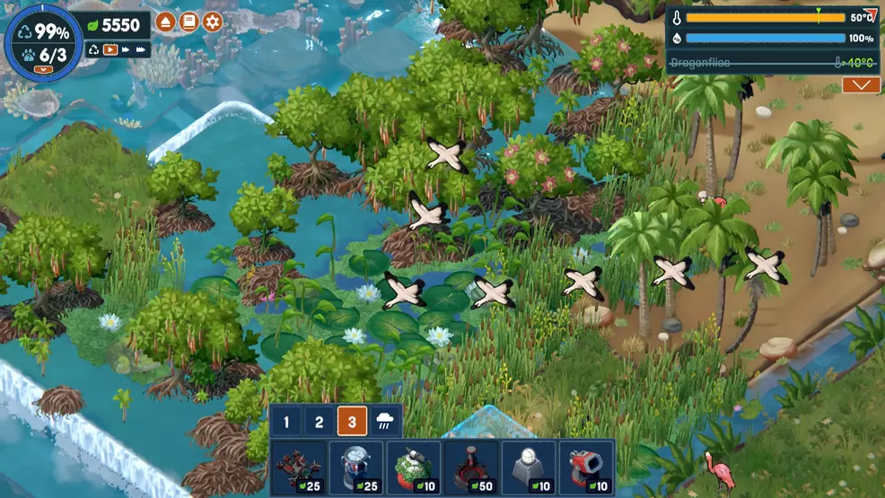
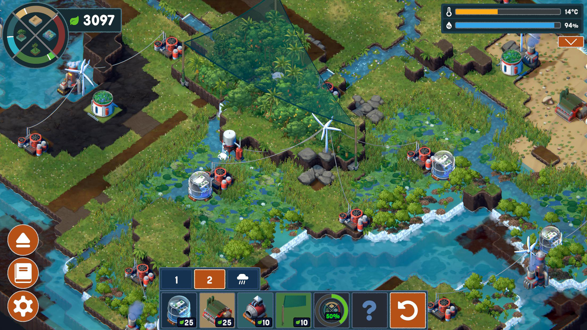
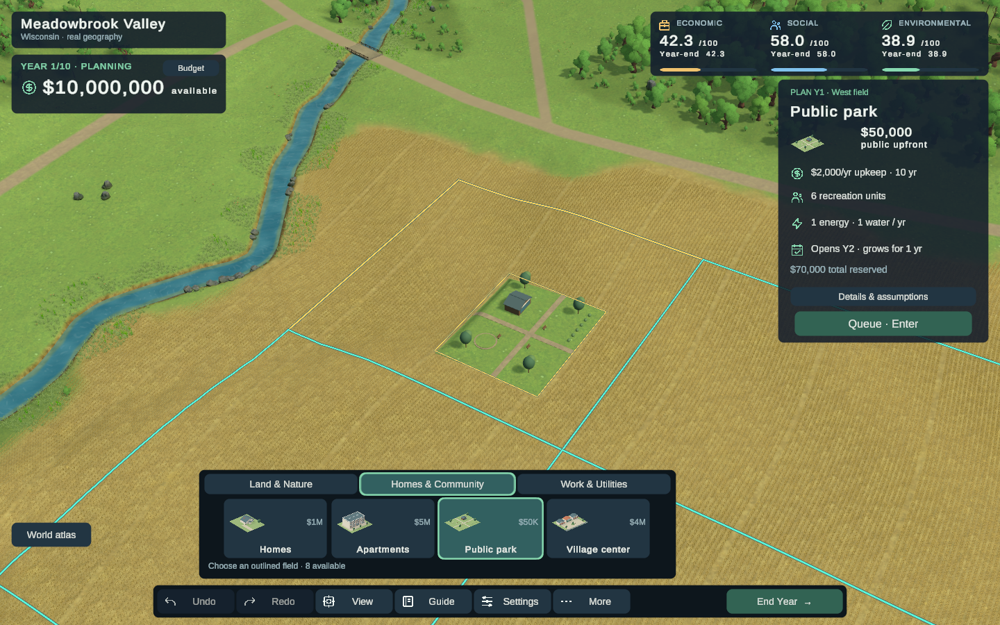
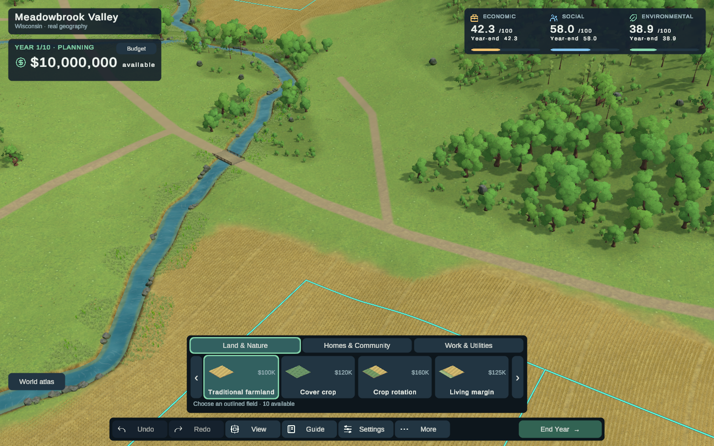

The tool, its footprint, its constraints and the meaning of the click must read as one action.
MyTerrain already has priced miniatures, valid-field highlights, a project inspector and undo. The gap is how those pieces fit together: broad competing outlines, a finished-looking preview, a moving palette and unclear reservation boundaries.
Terra Nil makes the candidate object the focus. Its miniature, ghost, affected ground and local facts reinforce one another. Borrow that placement grammar while keeping MyTerrain’s site rules, budget and project catalog.
What the player sees before a click
Aliensrock’s 13:20 gameplay video. Seventeen paused samples were visually inspected, with closer sampling of the first placements. This is edited footage: zooms and held/enlarged explanations are not reliable measurements of native HUD size or timing.
See the remaining inspected samples and research limits
We did not install/play Terra Nil, watch every second, or analyze the soundtrack. The 06:00 fire and later stage systems are deliberately outside the proposal. The precise meaning of every overlay color is not established by these stills. Read the timestamped observation log.
Keep the world and the decision together






The ingredients exist. The hierarchy does not yet hold.
These are actual integrated Chrome captures from b4693ac, inspected against source at refreshed main 061fe51. They are not new captures, mockups, or claims of novice comprehension. Build identity and original checks.

Placement ambiguity
- The small park footprint and the much larger allocated field are not explained as two different things.
- Available fields, hovered field and footprint compete for attention.
- The preview appears nearly finished. “Preview”, “Queued” and “Accepted” need different visual states.
Control ambiguity
- The palette moves and changes card capacity when the inspector opens.
- Clicking land already queues; Queue/Enter does too. The UI should teach that single action consistently.
- Purpose and trade-off are buried among abstract units. Money is accurate, but the decision is not yet easy to read.
Compare the current opening frame

One stable layout. Six unmistakable states.
This is a layout and state schematic, not a rendered art target or working game. Its simplified land shapes are illustrative. Buttons below switch examples; they do not simulate money, time or placement. The final implementation remains native Unity.
Valid preview
The footprint is dominant. The allocated field is quieter. The local capsule says what the click does and what it reserves.
Stable on purpose
The tool rail, card capacity, budget and inspector region do not move when hovering. These sketches specify hierarchy; final materials, dimensions and readability need Chrome validation.
Park example uses the existing $50K + $2K × 10 = $70K commitment. Outcome values are an audited fixture. The mockup does not calculate new outcomes. Project images are existing MyTerrain assets.
Borrow clarity, not another game’s mechanics
| Terra Nil pattern | MyTerrain adaptation | Boundary |
|---|---|---|
| Recognizable miniature and matching candidate | Same project identity in card, inspector and world | Existing assets first; clearer crop motifs |
| Candidate-local footprint and facts | Occupied ground + reserved site + exact commitment | No invented range, free placement or extra slots |
| Invalid candidate keeps tool identity | Blocked shape plus reason and recovery | No color-only errors |
| Distinct proposed and settled appearance | Preview / queued / accepted states | No mandatory reveal or time mechanic |
| Contextual illustrated help | Purpose, prerequisite, one trade-off | No encyclopedia or forced tutorial |
| Legible terrain at play zoom | Strong field/creek/canopy masses and grounded projects | Same geography; no cosmetic shrinking or fake water |
Prove one placement language, then apply it consistently.
First cover a park, a whole-field farming treatment and a connected swale. Together they expose the important spatial differences without changing game rules.
Agree the visual states
Browse, selected tool, valid, blocked, queued and replacement. Annotated frames and exact copy, reviewed at actual display size.
Stabilize tools and instructions
Fixed palette/inspector geometry, neutral opening, unmistakable tool identity, one contextual instruction and more distinct farming icons.
Put placement information on the land
Dominant footprint, subdued eligible fields, proposal material, site-slot distinction and local cost/rejection capsule.
Make confirmation and recovery obvious
Persistent queued marker, clear return to Browse, explicit replacement, predictable move/cancel/undo. Preserve authoritative commands and history.
Compose the playable world
Opening, close and overview should expose opportunities and landmarks. Coordinate with existing scenery work; this plan does not certify its quality.
Test comprehension and actual interaction
Queue, blocked recovery, move, replace and undo in Chrome. Verify keyboard, drag protection, larger text, 125% zoom and fixed control positions. Human comprehension remains unproven until observed.
Success is a player knowing what a click will do—and recognizing immediately whether it worked.
Read the full contract, source audit, rejection copy and acceptance checklist →